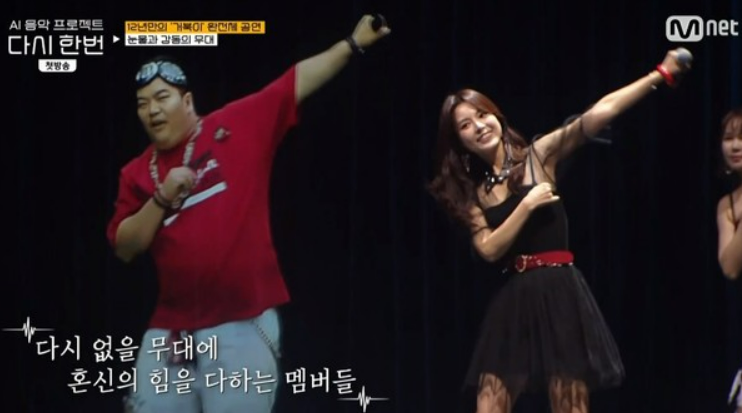
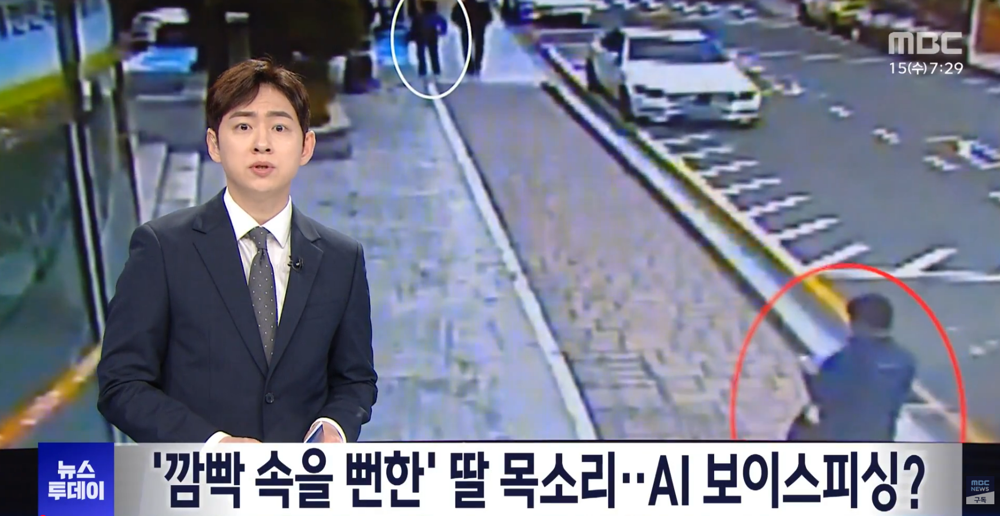

2021년,
세상을 떠난 가수의 목소리가
무대에 다시 올랐습니다.
AI가 복원한 목소리였습니다.

출처: ○○방송 「○○○」 (2021.○.○ 방영)
그날 우리는
그 기술에 감동했습니다.
그리고 지금,
같은 기술이 전화를 겁니다.
“엄마, 나 사고 났어.
지금 돈 좀 보내줄 수 있어?”
목소리는 분명 내 아들딸입니다.

출처: ○○뉴스 (2026.○.○ 보도)
이제 목소리는
증거가 되지 못합니다.
그래서 저희는
목소리만 듣지 않습니다.
무슨 말을 하는지, 목소리가 만들어진 것인지,
얼굴이 바뀐 것인지 — 세 가지를 한 번에 봅니다.
DualGuard
화상통화, 상대를 믿기 전에
듀얼렌즈(DualLens)